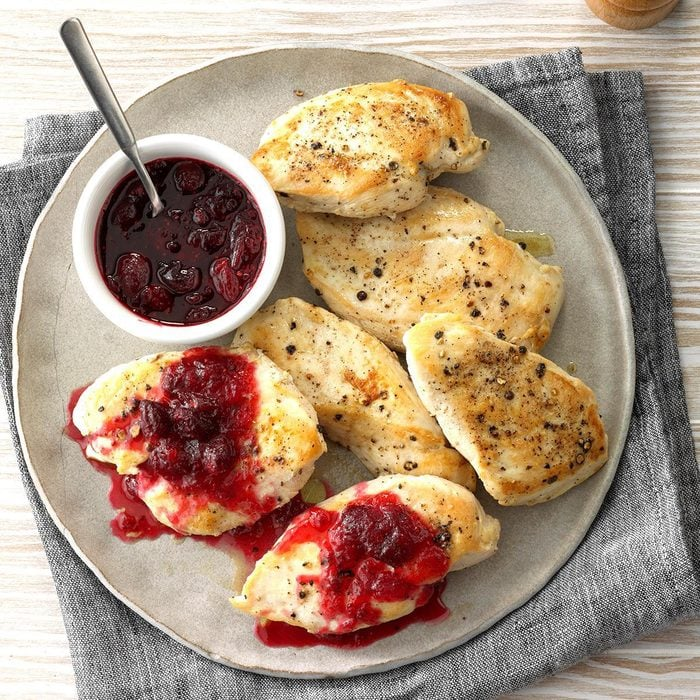

cranberry maple chicken

sweet and juicy breasts
everyone likes breasts, these ones are covered in maple and sugar. These are... 4 DA BOIZ
What You Will Need?
- 2 cups frozen or fresh cranberries
- 3/4 cup water
- 1/3 cup sugar
- 6 boneless skinless chicken breasts (halved)
- 1/2 teaspoon salt
- 1/4 teaspoon pepper
- 1 tablespoon canola oil
- 1/4 cup maple syrup
How It Will Go Down!
- in a saucepan, combine cranberries, water and sugar. cook over medium heat untill berries pop (15is min)
- while thats going on, sprinkle chicken with salt and pepper. cook in a large nonstick skillet in the oil till juices run clear (5-6 min a side)
- stir the maple syrup in the cranberry sauce and spoon over chicken. Enjoy!
Homepage